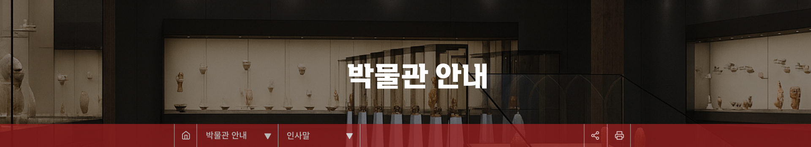
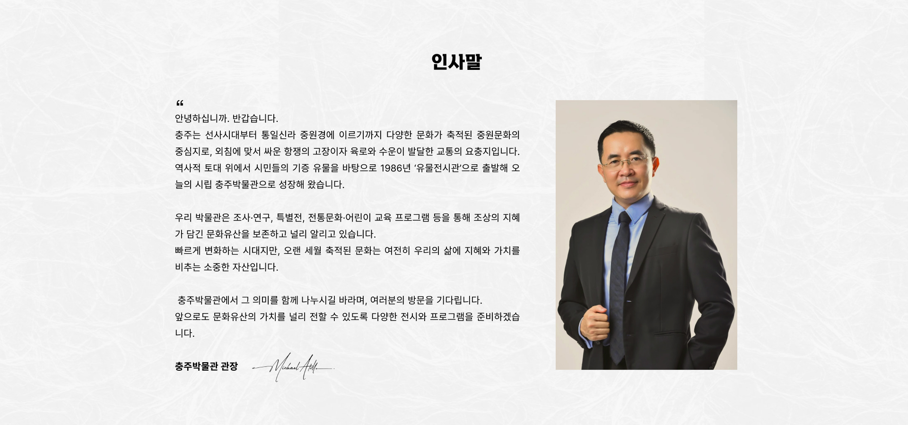
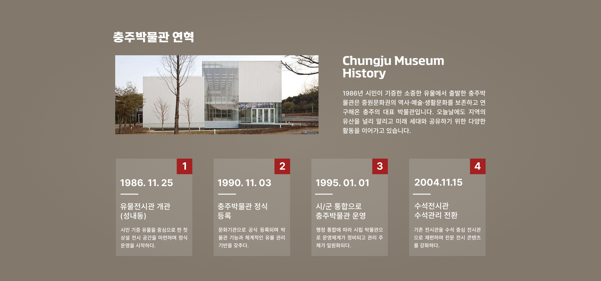
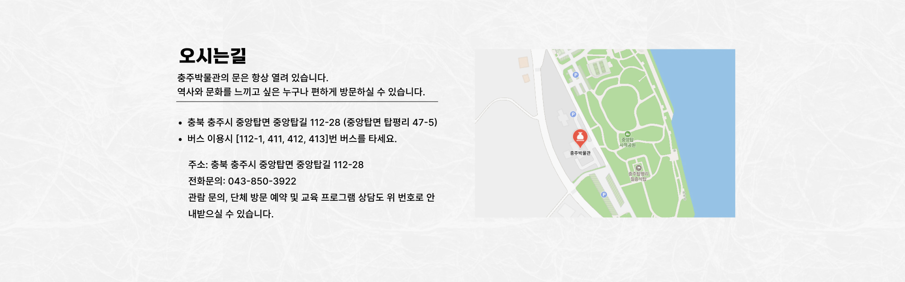

홈으로
|
정보공개
|
충주시청 바로가기
|
자료저장소
|
LANGUAGE
관람정보
관람안내
전시해설
시설안내
전시
상시전실
특별전시
야외전시
가상체험
교육·행사
행사소식
프로그램
문화행사
학술행사
교육자료
소식·참여
새소식
채용안내
월간소식
고객민원
설문조사
자료
소장유물
사진자료
발간자료
박물관 안내
인사말
박물관소개
오시는길
로그인
⌕



